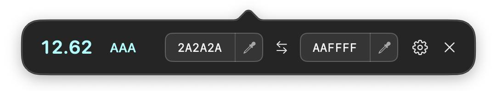

Using Chromatic
Pick two colors and check their contrast. Chromatic compares foreground and background colors against WCAG 2.2 text contrast requirements.
Pick and edit colors
Click a color square to open the macOS color picker, or click an eyedropper to sample a color anywhere on your screen. Press Escape to cancel screen sampling.
You can also enter three or six hex codes in either text field, with or without a leading #. Press Return to finish editing. Click the arrows between the fields to swap foreground and background.
The ratio and preview update as you change a color. The weather card is sample content to help you preview and compare text against its background.
Read the results
A higher ratio means greater contrast. The badge summarizes the result; the AA and AAA columns show whether regular and large text pass each level.
| WCAG level | Regular text | Large text |
|---|
| AA | 4.5:1 | 3:1 |
|---|
| AAA | 7:1 | 4.5:1 |
|---|
Large text means at least 18 points, or 14 points when bold (24 or about 18.7 CSS pixels). Results use the full ratio, even when the displayed value is rounded. Color contrast is one part of accessibility; passing this check does not establish full WCAG compliance.
Adjust a color
Open the wand menu to adjust either color toward 3:1, 4.5:1, or 7:1 while keeping the other color fixed. Adjustments work even when the current ratio already exceeds the target.
Some targets cannot be reached by changing only one color. If a color stays unchanged, try adjusting the other one. Eight-bit color values can produce a ratio slightly above the target.
Copy values and reuse colors
Open the code-symbol menu to copy either color as a hex code or an rgb(…) value. In Settings, Copy contrast value copies both colors, the ratio, and the AA and AAA results.
The history menu keeps the last 10 distinct colors picked, newest first. Click a color to copy its hex code. When you drag in the macOS picker, the preview stays live and history saves the color when you release the pointer. Clear history removes the saved list.
Use the mini window
In Settings, turn on Use the mini window for a compact row of controls. The window uses your background color, and the ratio and result use your foreground color.

Click a hex field to edit it. Double-click to select text. Triple-click to open the macOS color picker. The eyedroppers still sample from the screen, and Settings includes commands to copy either hex code.
The compact result reads AAA, AA, AA Lg (AA for large text only), or Fail. The preview and results grid are hidden in this mode. Turn off Use the mini window to return to the full view.
Other settings and keyboard shortcut
The "Show preview" and "Show WCAG results" control those two sections in the full view. Your choices are remembered, and these settings are unavailable in the mini window.
Enable "Pick foreground with ⌘⇧O" to immediately bring up the app window and start color picking. This shortcut works in both layouts. If macOS cannot register it, Chromatic shows an alert and leaves it disabled.
Close or Escape dismisses the Chromatic popover. Click its menu bar icon to open it again. To exit the app, choose "Quit Chromatic completely" in Settings.